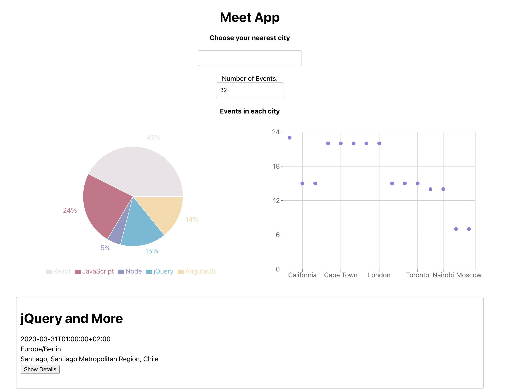

Objective: To build a serverless, progressive web application (PWA) with React using a test-driven development (TDD) technique. The application uses the Google Calendar API to fetch upcoming events. Frontend: Written with JavaScript/React; hosted on GitHub Pages. Backend (Server Logic): Written with Node/Express as Lambda functions (FaaS); hosted on AWS (requests come from frontend to Lambda function to data). Backend (Database): Google Calendar API.
 Click here to see app!A simple JavaScript app that pulls data from [PokeApi](https://pokeapi.co/) to display info on the original 150 Pokemon.
Live on gh-pages GitHub RepositoryChat App for both Android/iOS created with React Native. The app provides users with a chat interface and options to share images and their location.
GitHub RepositoryThe server-side component of the myFlix web application. The web application will provide users with access to information about different movies, directors, and genres. Users will be able to sign up, update their personal information, and create a list of their favorite movies.
Deployed on Heroku GitHub RepositoryMyFlix is a movie app containing a few of my favorite films. Users are able to create an account, browse the movie selection, and learn details about each movie such as a description, the movie's genre, and the director. Users can also create a list of their favorite movies, and update their profile information. The client-side of the app displays several interface views that handle data through the REST API endpoints. The back-end includes authentication and authorization, and was built using JWToken, CORS, & Passport. This project utilizes the MERN stack: MongoDB, Express, React, & Node.js. Other tools used include: Bootstrap, Redux, Parcel, Heroku, Javascript, HTML, & CSS.
Live on Netlify GitHub RepositoryThe client-side for an application called myFlix based on its existing server-side code (REST API and database), with supporting documentation.
Live on gh-pages GitHub Repository